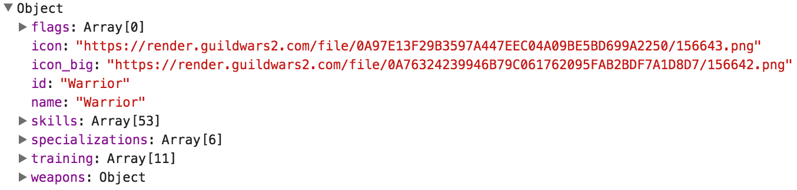

Guild Wars 2 User Guide
In this guide, I will be demonstrating how to use the Guild Wars 2 (GW2) API. The current documentation for the GW2 API excels at describing the flow of information from parameter passing to return objects, and what each field represents. However, I felt the site lack in two areas specifically. First, I found it difficult to get things up running in my initial pass of the material. It wasn’t clear to me what the base root was for the API until I came across it in an example call. So the documentation would stand to gain in clarity if it included a better ‘getting started’ section. My second impression was that there was no real indication of how these requests would be useful. To elaborate, in most instances you needed an ID to get information about but the process of getting an ID (beyond searching through arrays), wasn’t really explored. So these areas were the focus of this website.
Game Mechanics
Explore the details that make up the characters of Tyria, including professions, skills, traits, and specializations.
Items
Learn about the vast amount of items that characters have access to, and the fundamentals of equipment.
Trading Post
The game within the game - information about accessing the in-game trading post can be found here.
Getting Started
There is a very extensive WIKI for Guild Wars 2 that can be accessed using the following link: https://wiki.guildwars2.com/wiki/API:2. This is where you will find a listing of active endpoints for the API. The base address for all endpoints is: https://api.guildwars2.com/v2.
The API resources can be acessed in the following way:
- A list of resources can be obtained by accessing each endpoint directly
- A single resource can be obtained by specifying the id query parameter at the base endpoint
- Multiple resources, as an array of objects, can be obtained by specifying the ids query parameter instead. The query should be in the format of a comma-separated list of identifiers.
The endpoints also support paging where a page size, total number of pages, number of resources on a page, or total number of resources can be specified. Resources can also be returned in the following languages: english, spanish, french, dutch, chinese and korean.
Here is an example of Javascript code used to make a request to the API to retrieve some data:
var apiURL = "api.guildwars2.com/v2";
req.open('GET', apiURL, true);
req.addEventListener('load',function(){
if(req.status >= 200 && req.status < 400)
{
var response = JSON.parse(req.responseText);
console.log(response);
}
else {
console.log('Network request error: ' + req.statusText);
}});
req.send();
- A few things to note here:
- To make a request to the API we will be using XMLHttpRequest object
- We will be making an asynhrouous GET request (asynhrouous is specified with the last parameter in the req.open function)
- An event handler is created to handle the response received from the api call.
- As long as an error did not occur, we should see the object returned in the console.
The console is used here for testing purposes to examine the returned object attributes. - With the response object the various attributes can be accessed like this: [object.name].[attribute]
This guide will focus on Guild Wars 2 specific information. GW2 API Reference: Guild Wars 2 API WIKI
Game Mechanics
Starting with the most fundamental concept of GW2, we have the profession. Professions dictate the skills, traits, specialization, weapons, and armor a character has access to. There are a total of nine in game, and it is one of the few aspects of your character that cannot be changed after selection
The GW2 API is provides a useful command to request information about each professions through the root: https://api.guildwars2.com/v2/professions. You then have two options; submitting as is will return a list of all available professions in GW2 - something that might be useful for players new to the game. But more than likely, you will want to know the specifics of a certain class, and this can be done by inserting the class id after the professions root. Consequently, the id is the name of the profession - so if you were to first request the list of all classes, inputting one of those nine entries would return an object containing the details of that particular profession. The object returned will contain some surface details about the profession, including the name, id, and two links to images of the profession’s icon (small and large).
We start by calling professions without an id parameter, using the url, https://api.guildwars2.com/v2/professions. Doing so returns an array of each of class ids (their names), which should look something like the following:
Now we can input one of these ids as an input to receive an object with details about that class. We will use the Warrior profession in this example, so the call would look like, https://api.guildwars2.com/v2/professions/Warrior. This returns: in addition to some surface details (name, id, icon urls), we can now see the which skills, weapons, and training are available to the Warrior. Note that training just describes the sum of all a profession’s skills and traits.
GW2 API reference: Game Mechanics Professions
Moving on, we have skills - the active abilities a character has access to in combat. They vary greatly in purpose, from damage and healing, to mobility and protection. As we’ve learned, the available set of skills is dependent on the chosen profession, though skills themselves can be subcategorized into many groups (as you will see in the example). Keeping with convention, calling: https://api.guildwars2.com/v2/skills without appending a skill id to the end, will return an array of all skill ids. However, this is far less useful than the profession equivalent because the skill ids are not their names - they are strings of numbers. This means that you cannot look up a particular skill by name, rather, you plug in one of the entries and get the name/information based on the object returned. The object you get back depends on the type of skill you inputted, though it will always have a name, id, description
We could use the url https://api.guildwars2.com/v2/professions without a skill id parameter, but it’s not practical given return object consists of a large array of numeric ids without any direct references. So let’s instead work from our Warrior example from the professions section (https://api.guildwars2.com/v2/professions/Warrior). If we expand the skills tab we see a sub array of objects corresponding to Warrior specific skills. If we then expand one of those object we will see the skill id as well as type and slot field - these fields help describe the skill so you can narrow down your search.
To look at this utility skill (object 30), we use the command: . The object returned to us fleshes out the details; the name of the skill is “Endure Pain” and a brief description is provided. Some important things to note: the facts vary in number and content depending on the skill. Endure Pain, for example, has two facts - a recharge time of 60 seconds, and a duration of 4 seconds.
GW2 API reference: Game Mechanics Skills
Now we will take a look at specializations, the passive abilities that define a character. Like skills, specializations are bound to a profession, but they are much fewer in quantity (only five per profession). The API divides specializations and traits into two sections, but in reality, it is difficult to separate them since specializations outline a path of available traits. A character can only have 3 specialization active at any time, but can chose from a variety of traits within the structure.
As per the norm, we can get specializations without the use of an id to return a list of all specializations: https://api.guildwars2.com/v2/specilizations. This does suffer from the same problem as skills though, in that ids returned are digits.
With specializations, we again have the ability to call without specifying an id; And while this number is lower that skill and traits (just 45 elements), it still serves us little purpose beyond try and check. So we will once more refer to our Warrior example to show a practical application for this get function. In the traits section, we learned the Last Stand augmented the skill Endure Pain. Now let’s say we want to incorporate this trait into our character’s build, we would first need to find the corresponding specialization line. We noted earlier that the trait object contained a specialization field, and in the case of Last Stand - the specialization id is 22. So our call would be: https://api.guildwars2.com/v2/specializations/22.
So the specialization is called “Defense”, and like all other specializations it contains 12 traits total - 9 minor and 3 major. Major traits are the ones you select (recall that you choose one per tier for a total of 3), whereas minor traits you get automatically. Note, Last Stand is a major trait since it appears under that section. The only other data we have yet to cover is the elite field, and since Defense is not an elite specialization - it gets the type false.
GW2 API reference: Game Mechanics Specializations
We’ve touched on traits already given their closeness with specializations, but we haven’t gone over what they actually do. We stated that specializations are the passive abilities that make up a character, but really, all they do is define traits lines; It’s the traits themselves that grant the effects. Specifically, traits tend to augment a characters attributes or modify their skills in some way - it’s the major source of build diversity in the game. There are three tiers of traits, each with selection of three traits, meaning there are 27 possible combination for each specialization. Again we start with the instance in which no id is provided: https://api.guildwars2.com/v2/traits. This will return the corresponding digit ids for all of the traits.
As per convention, we can call traits without a trait id parameter, but it suffers from the same unwieldy array as skills (though not quite as large). So again, let’s turn to a more reasonable use for the traits get command - extending from our example skills. In the previous discussion we mentioned that the Endure Pain had a traited fact, meaning there existed some trait that affected the skill in some way. Suppose we wanted to know what that trait was, and more importantly, how it impacted Endure Pain; we could get that information by using the returned trait id in “traited_facts” field as as parameter in our trait call: https://api.guildwars2.com/v2/traits/1375.
We see that the trait is called “Last Stand”, and by the by the description it has two effect. The first is unrelated to the Endure Pain, but the second states that stance durations are increased. Most GW2 players will be familiar with the idea that Endure Pain is a stance but this may not be not apparent to those new to the game. It was mentioned briefly in the description, but we can confirm this for ourselves by looking back at the categories section of the Endure Pain object to see that it is labeled as a stance. Back the the trait object, we see that there is also a fact field present here, and for Endure Pain, one of them specifies the duration increase for stances. Finally we see the specialization id from which the trait is bound to (more on this next).
GW2 API reference: Game Mechanics Traits
API Items
In GW2, items refer to any object that a character can have in their inventory. There are many different types of items in the game, from equipment, to consumables, to utilities, and much, much more. In terms of character progression, however, the most important items are weapons and armor (this is a combat game at its core). These items are different in that they can be bound to the character as opposed to just floating in inventory or storage. We’ve learned earlier the types of equipment which could be used certain professions using the corresponding get request, but now we’ll be able to see specific instances of those items that populate the land of Tyria.
The GW2 API provides a get call to access items using the base: https://api.guildwars2.com/v2/traits, followed by an item id. You can leave this blank to return a list of all items id in the game - just be warned this is an array of length of more than 56000.
The API’s items request commands offer similar functionality to those under game mechanics, in that the user can chose whether or not to leave the item ID blank. Unfortunately, there is no easy way of going about searching for an item using the API - save for method of exhaustion. However, sites have been created for this very purpose; Searching for an item on the site: http://gw2wbot.darthmaim.de/smiley/gw2itemsearch.html returns the corresponding id, which then can be used in conjunction with the API to get details about that item. For example, let’s say I want some information on a legendary greatsword call Eternity. I find the id through the site provided, which turns out to be 30689. I then plug that value into the item get call, which looks like: https://api.guildwars2.com/v2/items/30689
Similar to other entities in GW2, the object returned includes the name, ID, and icon. For items, however, we see a variety of new qualities. First is dealt_skin, which refers to the appearance of equipment. Details is a sub-object containing the equipments stats (i.e. base damage for weapons, defense for armor). Level refers the the level requirement needed to equip and we mentioned before the rarity which is legendary. Eternity is a sword so we know its type is weapon, and lastly vendor_value refers to the price you would get for selling it to an NPC (non-player character). Note that 10,000 may seem like a lot but this is the copper value, meaning you would only get one gold piece (100 copper per silver, 100 silver per gold).
Here are some additional items that the api provides data for in the item category:
FinishersDefeat your opponents… with style! (learn more)
GW2 API reference: Finishers
Item StatsIntra-weapon variety provides a near-limitless possibilities. (learn more)
GW2 API reference: Item Statistics
MaterialsTime to get gathering! (learn more)
GW2 API reference: Maaterials
PVP/AmuletsBecause structured PvP is better PvP. (learn more)
GW2 API reference: PVP/Amulets
RecipesNot just for cooking! (learn more)
GW2 API reference: Recipes
SkinsA.k.a. Fashion Wars 2 (learn more)
GW2 API reference: Skins
Trading Post
We mentioned before the importance of equipment, but didn’t go over at all the acquisition. Items can be naturally collected by looting enemies, quest rewards, and other means, but the most common and practical way of getting the gear you need is via the trading post. The trading post allows users to post buy and sell orders for certain items allowing other players to sell and buy instantly. The in-game currency is used in these transaction (gold, silver, and copper), which like items, can be acquired through a multitude of ways.
The API for the trading post is a bit different from the other sections we’ve covered in that you are not entering an ID that corresponds to a specific buy or sell listing. This is primarily due to the fact that listings are dynamic whereas the information about skills or items are static. So instead the user opts to enter the ID of an item. Leaving this field blank is acceptable, returning a listing for every applicable item on the trading post, though keeping with the leitmotif of this API - it’s seldom useful unless you have some way of rapidly parsing through every entry.
We will continue with the Eternity example from items section. Say you have one in your possession and you want to sell it; you have three options and you want to make the most money. The first option is to sell it to a vendor, which we learned will yield one gold. The other two involve checking the buy and sell listings - which means we will need to access the data in the trading post. So we use the call: reqApi.open("GET", "https://api.guildwars2.com/v2/items/30689", true).

Each object in the buys and sells arrays corresponds to an item listing. The buy listings are assorted in descending order and the sell listing in ascending order. If we choose to sell instantly we want to sell to the highest buyer, which due to the ordering, will be the first item on the list. We look at the unit_price attribute which holds the value 36410501, meaning we could get 36410501 copper (or 3641 gold) immediately. If you want the best possible deal, you need to be patient and put up a sell listing. Though to be competitive, you need to look at the current sellers and undercut them slightly. So to find the lowest sell listing, we look at the first object in the sells array, which has a unit_price of 44900000 (so 4490 gold). Thus, through the use of this API, we now know the vendor is complete rip-off, and you stand to make almost 850 by making a listing. Of course, since the API is accessing the real market, the prices will vary over a period of time. And as an ending note, there are some items which cannot be sold trading post, and using such an item as parameter will lead to a 404 (not found) error.
GW2 API reference: Trading Post Listings
Here are some additional items that the api provides data for in the trading category:
When you need that economic boost. (learn more)
GW2 API reference: Trading Post Exchange